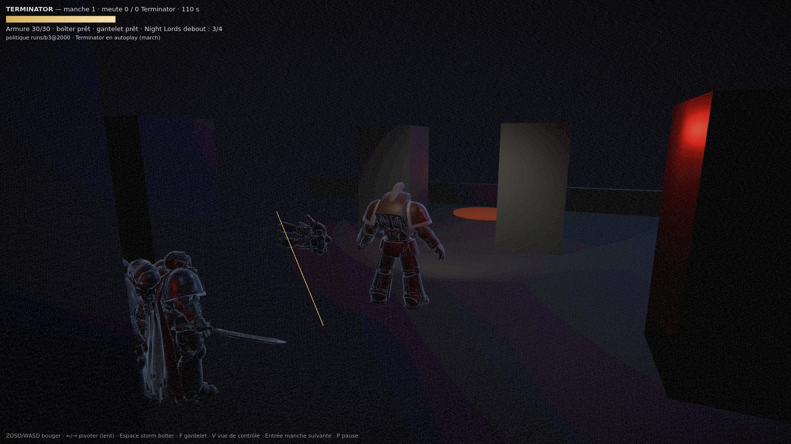
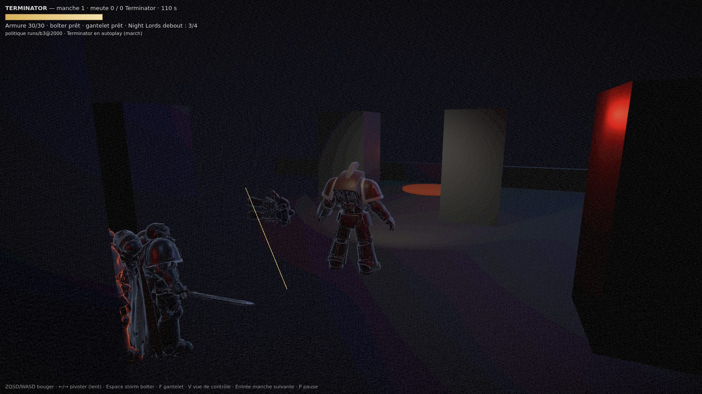
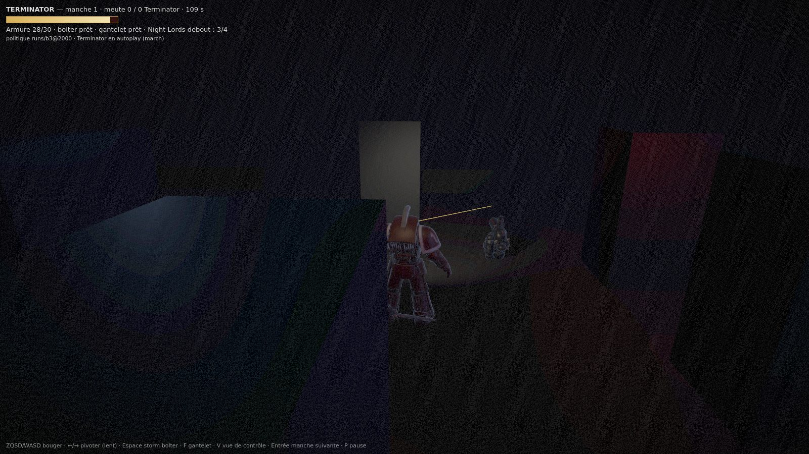
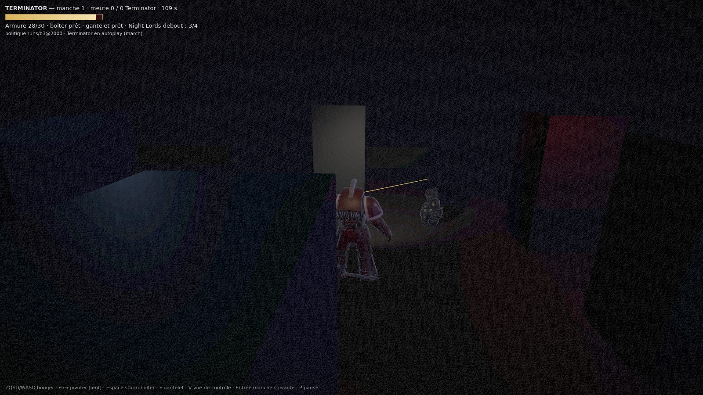

Night Lords — la traque · ?shot=100|110&seed=3&autoplay=march · ?tell=0 coupe le télégraphe. Aucune capture n'a été retouchée.
 t100 — sans télégraphe. Deux Night Lords à 4,1 et 5,1 m, liseré bleu froid : on sait qu'ils sont là, pas qu'ils peuvent frapper. |
 t100 — télégraphe actif. Ces deux-là ont la griffe prête ( |
 t110 — sans télégraphe. Les trois sont à 1,3 / 1,3 / 2,1 m du Terminator ; celui qu'on voit porte le liseré froid de P2. |
 t110 — télégraphe actif, et rien ne s'allume. Les trois griffes rechargent ( |